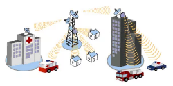

WMAN
Una Red de Área Metropolitana Inalámbrica (WMAN) es una tecnología de red que permite la conexión inalámbrica de dispositivos electrónicos a distancias mayores que las WLAN, pero menores que las WWAN.
